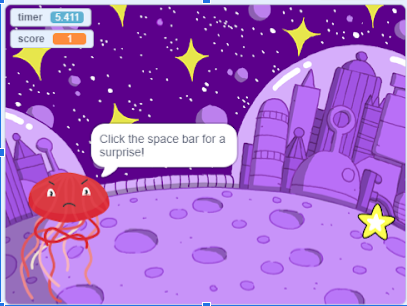
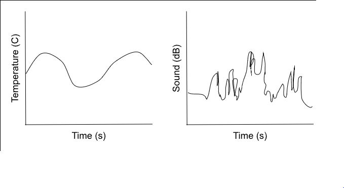
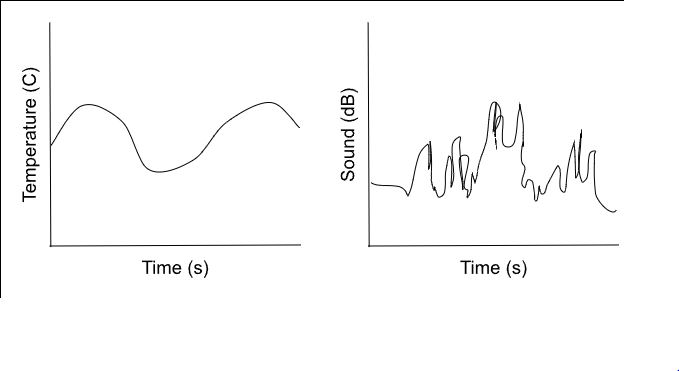

This is my Portfolio Page!
Snake Game

This is a different version of the snake game. Instead of moving with the arrow keys, you answer questions and attempt to eat up to five apples! The game ends when 5 apples are eaten or one of the questions is answered incorrectly.
Cookie Clicker

The objective of this game is to click as many cookies as possible. This has to be done within the 30 second timer. Every time a cookie is clicked, a new one populates and moves around the screen.
Scratch project

This game is called Star Clicker. The goal of this game is to beat each of the 3 levels, with different backgrounds and different characters. You have 30 seconds to click as many stars as possible to try to get on the leaderboard.
3.2.4 Project

This is my 3.2.4 project. It was more of an assignment than a project, as most of the work was done on a google document. This was about statistics of honey, varying on year, state, and rates.
This is my 4.1.4 Poject, Ant Simulation

This project was a deeper look into an ant simulation. We could alter variables and quantities, and looked for ways to improve the simulation. We then created a slideshow to present our findings.
This is my 3.1.6 project

This is the last project of the year! In this project, we gathered data about light, sound, and temperature from different places. We then had to analyze graphs and data to further our understandings and knowlege.
3.2.4 Project
This is my 3.2.4 project. It was more of an assignment than a project, as most of the work was done on a google document. This was about statistics of honey, varying on year, state, and rates.
This is my 4.1.4 Poject, Ant Simulation
This project was a deeper look into an ant simulation. We could alter variables and quantities, and looked for ways to improve the simulation. We then created a slideshow to present our findings.
This is my 3.1.6 project
